Monument Valley
Monument Valley es un precioso
rompecabezas desarrollado por Ustwo (Whale Trail) que consiste en guiar a una princesa
silenciosa a través de hermosos monumentos basados en las estructuras imposibles de Escher
que deberemos manipular para descubrir sus senderos ocultos, disfrutar de sus ilusiones ópticas
y su de pequeña historia.
Monument Valley nos llevará a través de sus actuales 10 niveles
por mundos fantásticos, por un paseo artístico y sonoro en los que la dificultad irá creciendo
a medida que vamos avanzando. El juego está traducido al español, guardado en la nube y logros.

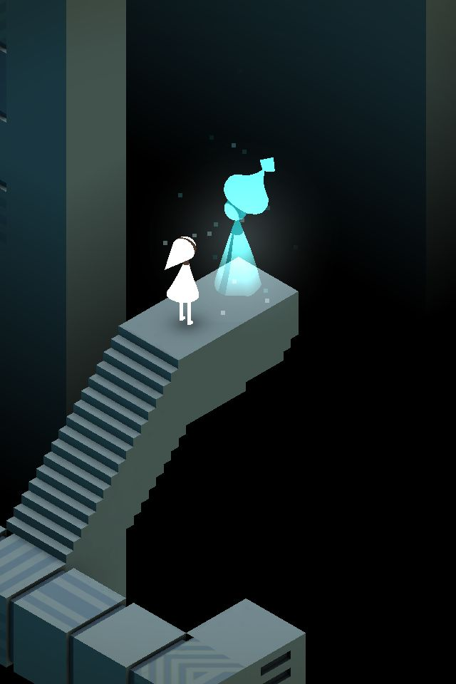
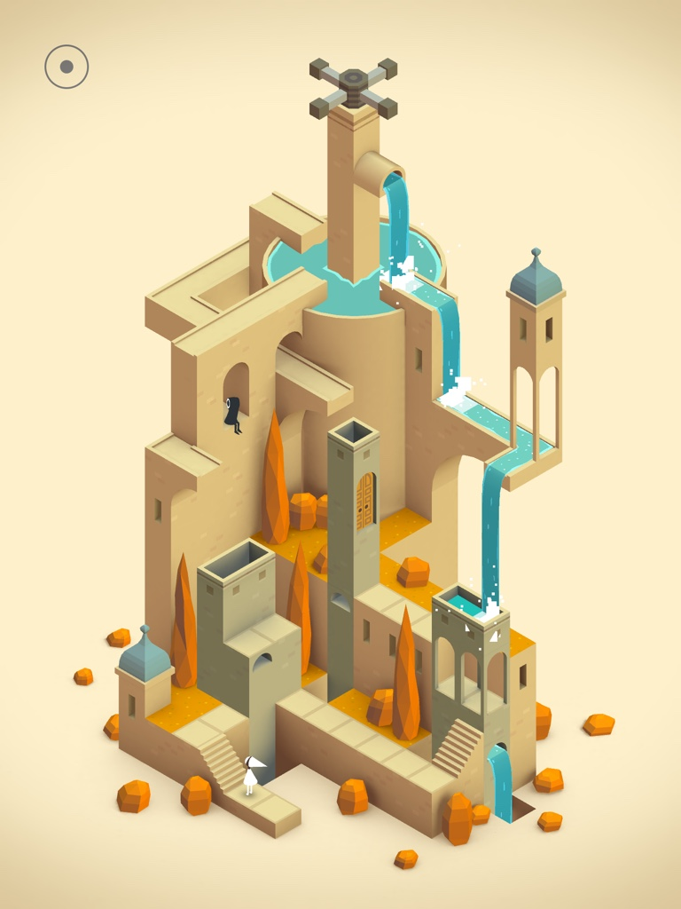
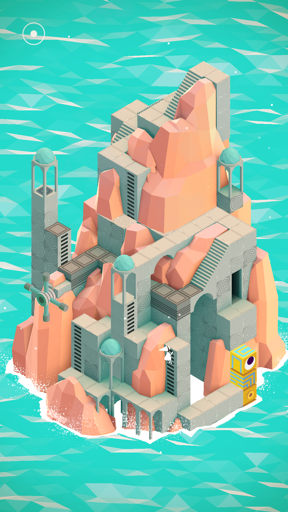
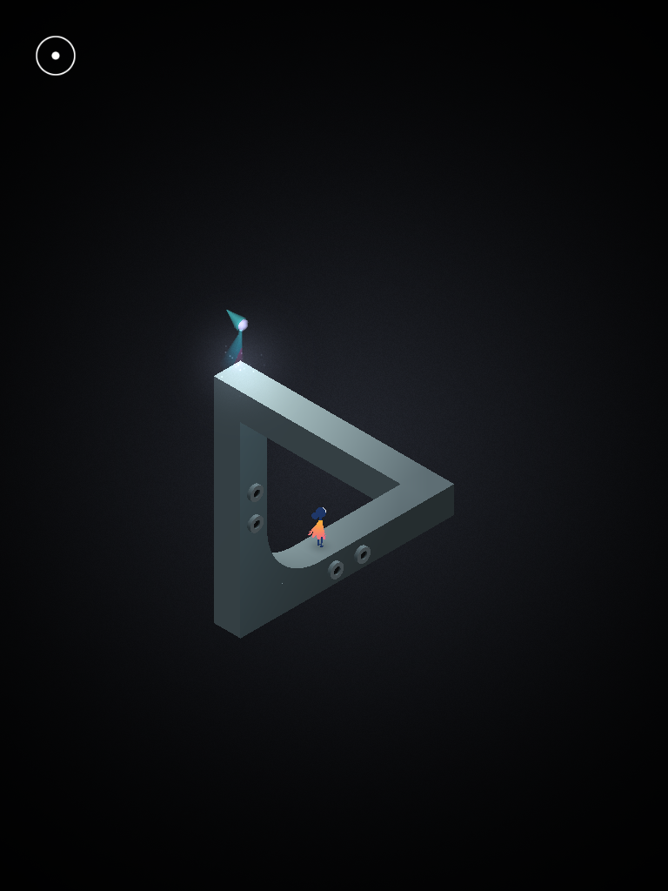
Fotografía
Se llama fotografía a una técnica y a una forma de arte que consisten en capturar
imágenes empleando para ello la luz, proyectándola y fijándola en forma de imágenes sobre
un medio sensible (físico o digital).
La fotografía toda se basa en el mismo principio de la “cámara oscura”, un instrumento óptico
que consiste en un compartimiento totalmente oscuro dotado de un agujero pequeño en uno de
sus extremos, por el cual ingresa la luz y proyecta sobre el fondo oscurecido las imágenes de
lo que ocurra afuera del compartimiento, aunque invertidas.
En el caso de las cámaras fotográficas, el principio es exactamente el mismo, excepto que
están dotadas de lentes para afinar el foco de lo proyectado, espejos para reinvertir la
imagen proyectada y por último una cinta fotosensible (o un sensor digital semejante), que
capta la imagen y la guarda, para poder luego revelarla o visualizarla digitalmente.
Selene, diosa de la luna.
Selene es la antigua diosa griega de la luna, hija de los titanes Hiperión y Tea, su nombre
se encuentra conectado con el termino griego “selas” que significa luz, sus hermanos son Helios
el dios del Sol y la diosa de la aurora Eos.
A esta diosa se le representa como un mujer muy hermosa de pálido rostro, conduciendo un carruaje
plateado a través de los cielos nocturnos, el carruaje son tirados por un par de bueyes que habrían
sido obsequio de Pan, algunas versiones indican que no son bueyes sino caballos.
De acuerdo a la mitología griega, la historia de amor entre Selene y Endimión es la más conocida de todas. Resulta
que Endimión se encontraba en el monte Latmus cuidando a sus rebaños, luego de un día agotador se recuesta
en una gruta para descansar, Selene se encontraba rondando los cielos con su carruaje y pudo observar a un joven
dormido en una cueva. La diosa descendió a la cueva, esta se iluminó de una luz plateada y despertó a Endimión con un beso.
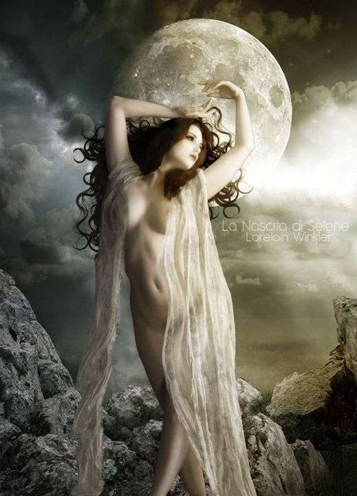
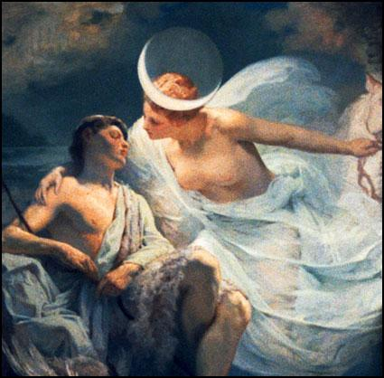
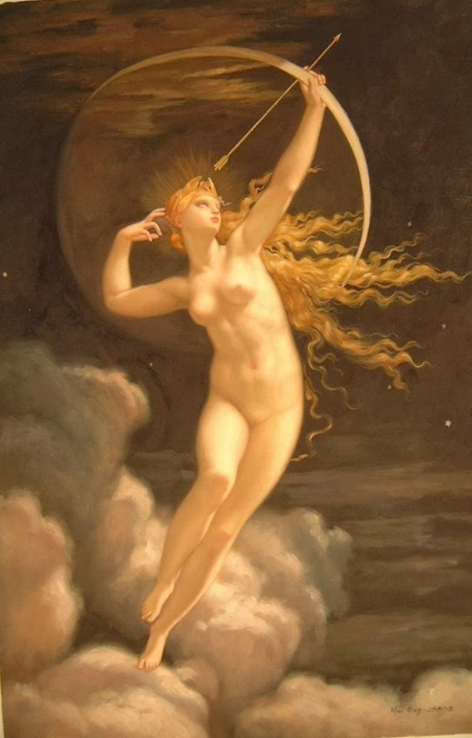
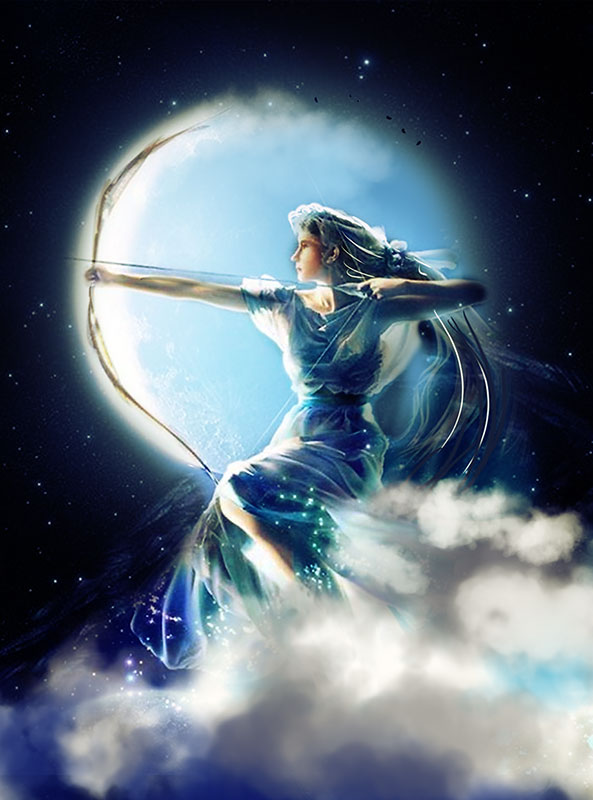
Trastorno de personalidad múltiple
El trastorno de identidad disociativo o personalidad múltiple, se caracteriza por la presencia de dos o más personalidades
distintas en el mismo individuo, de las que sólo se manifiesta o toma el control una cada vez. Cada identidad construye sus
propios recuerdos, tiene sus gustos, preferencias, y una conducta específica. El individuo es incapaz de recordar información
personal relevante que no es explicable por un olvido ordinario, hasta el punto de que cada personalidad se experimenta como si
tuviera su propia historia y autoimagen.
Suele existir una personalidad principal o anfitriona previa a la aparición del trastorno y otras identidades que se desarrollan
posteriormente. El paciente normalmente desconoce la existencia de las otras personalidades, lo va descubriendo lentamente como
consecuencia de sus comportamientos (ej. Despertarse con un osito de peluche en la mano que no sabe de dónde procede, descubrir
que ha hecho uso de una gran cantidad de dinero sin saber en qué etc.).
Las causas de este trastorno de personalidad múltiple en el 95% de los casos están asociadas a traumas infantiles (abuso físico
y sexual) el sujeto no puede hacer frente a la situación traumática vivida y desarrolla una personalidad que le protege o le hace más fuerte.

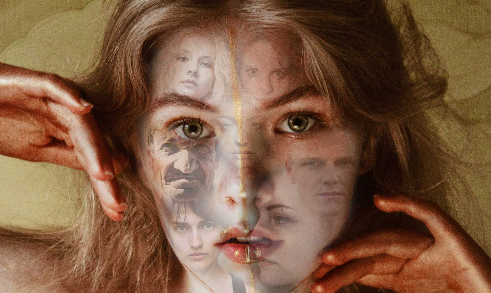
COEX Aquarium
El Acuario del COEX o COEX Aquarium (en coreano: 코엑스 아쿠아리움) se localiza en el distrito Gangnam de la ciudad de Seúl, y se trata de uno
de los acuarios más grandes de Corea del Sur con más de 40,000 criaturas de más de 650 especies en exhibición. El acuario COEX consiste en 90
tanques de exhibición agrupados en catorce "zonas de descubrimiento", incluyendo seis áreas temáticas. El acuario está ubicado en el centro comercial COEX,
que es, en sí, parte del Centro de Convenciones y exhibiciones (COEX por sus siglas en inglés). El acuario abrió sus puertas en el año 2,000
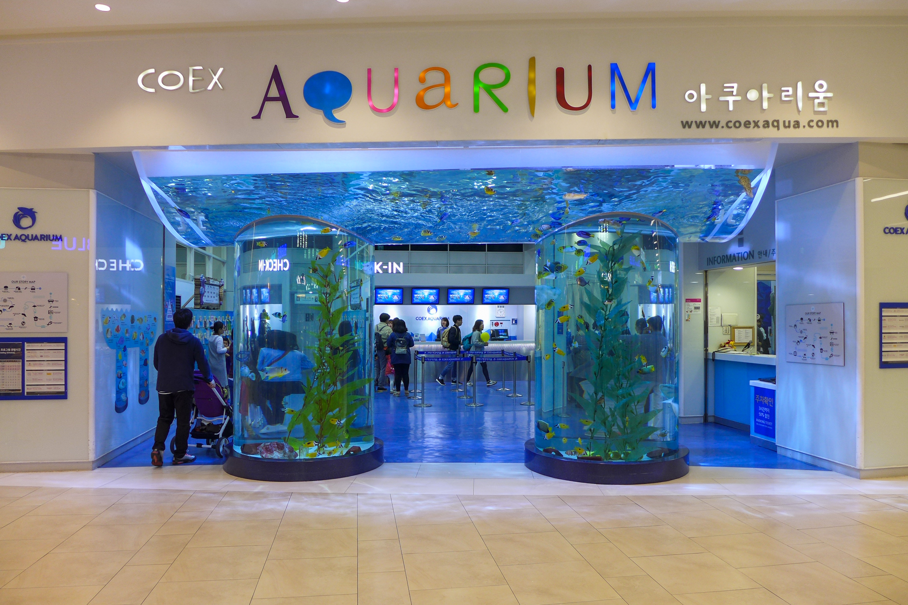
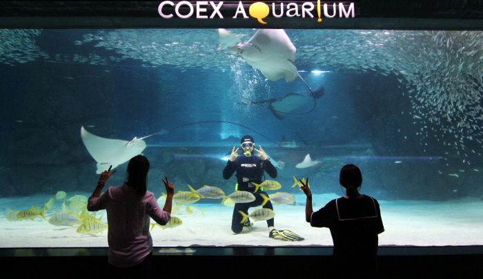
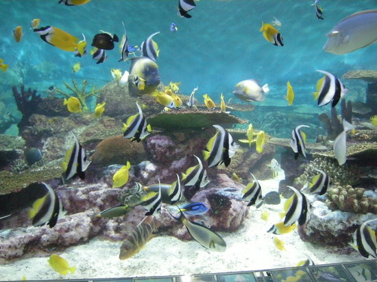
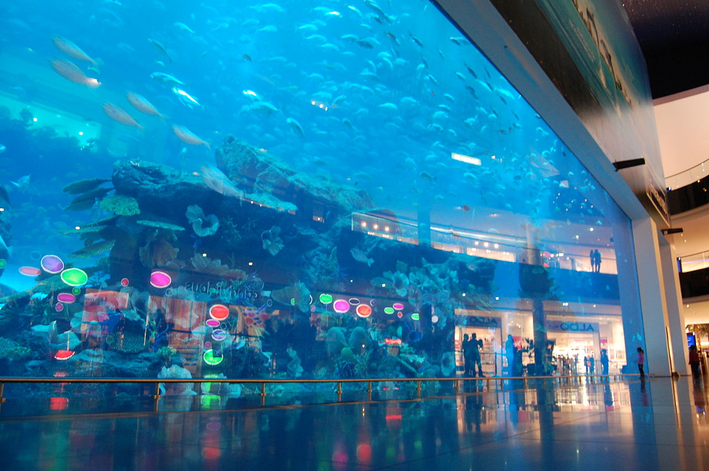